Media
Experimental campaigns, flow visualisation, and conference moments
Experimental aerodynamics is highly visual: models, facilities, measurement setups, flow fields, and conference discussions often explain the work faster than a paragraph can. This page is intended as a curated visual record of campaigns, methods, and scientific communication.
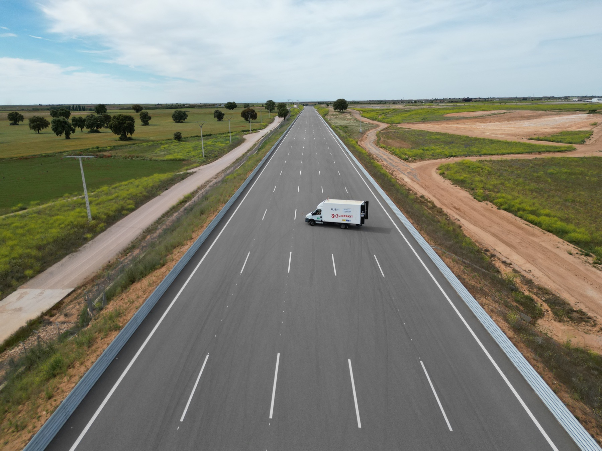
On-Track Testing, 2024
Full-Scale Aerodynamic Assessment
Experimental campaign with a heavy-vehicle test platform equipped with rear-mounted aerodynamic devices, aimed at connecting controlled wind-tunnel findings with vehicle-scale behaviour under more representative operating conditions.
On-Track Testing Campaign, 2024
Experimental Campaign
Vehicle-scale aerodynamic testing
Four-image reel documenting the 2024 on-track campaign with a heavy-vehicle test platform and rear-mounted drag-reduction devices.
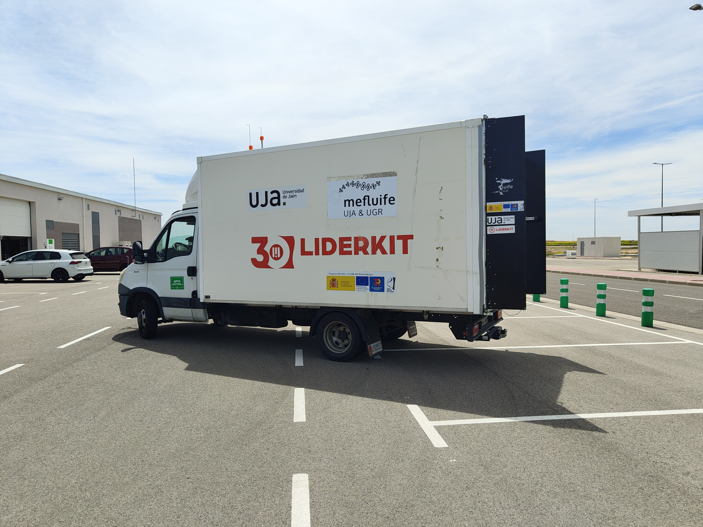
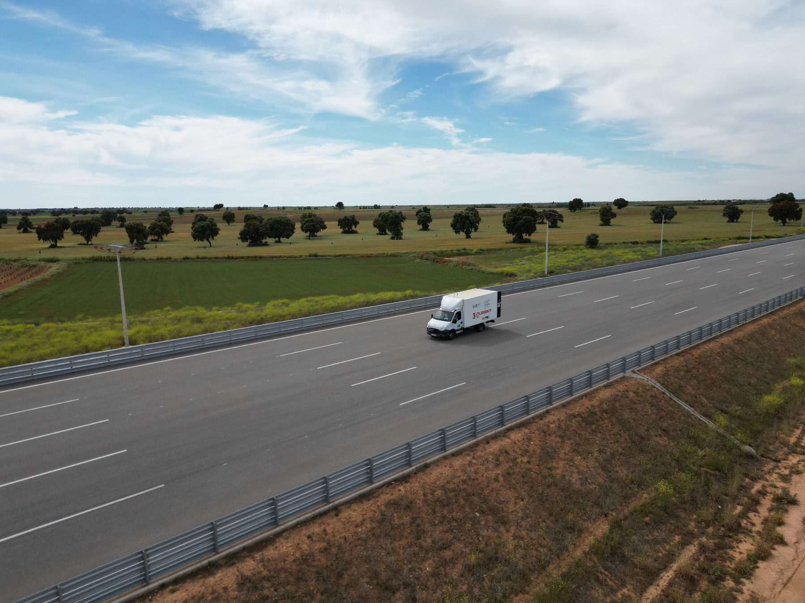
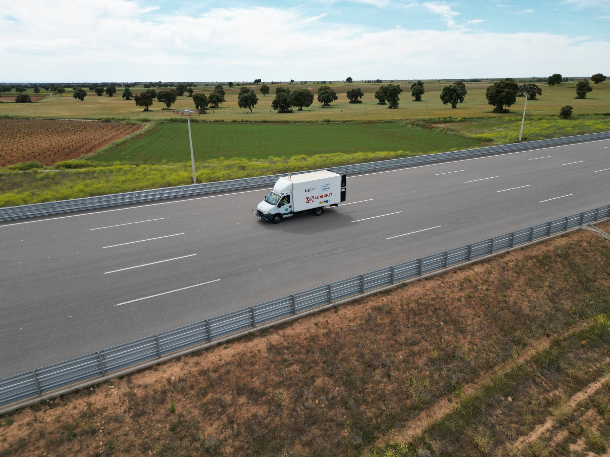
Click the left or right side of a photo, swipe, scroll horizontally, or use the arrow keys to move through the campaign reel. If idle, the reel advances automatically.
IISTA Wind Tunnel, University of Granada
Wind-Tunnel Facility
IISTA experimental aerodynamics infrastructure
Four-image reel documenting wind-tunnel testing facilities at IISTA, University of Granada, including model installation, test-section views, and the broader experimental environment.
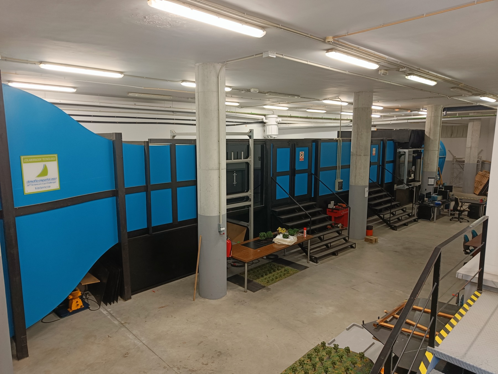
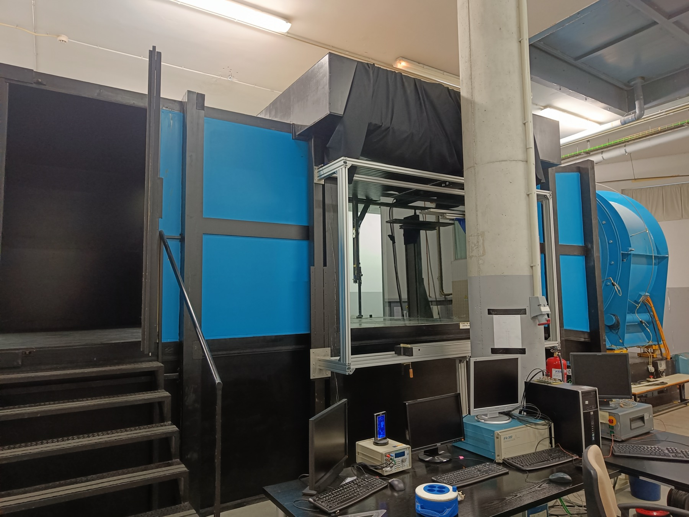
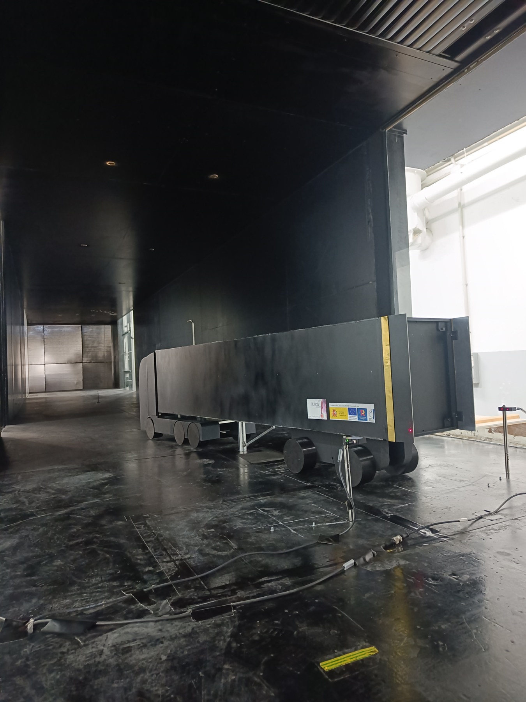
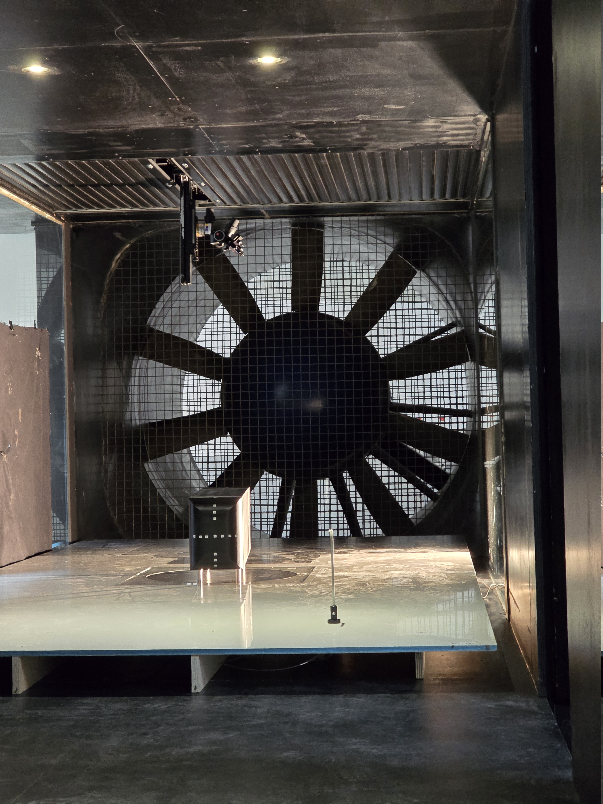
Click the left or right side of a photo, swipe, scroll horizontally, or use the arrow keys to move through the wind-tunnel reel. If idle, the reel advances automatically.
University of Jaén Wind Tunnel
Wind-Tunnel Facility
Universidad de Jaén experimental wind-tunnel setup
Five-image reel documenting wind-tunnel work at Universidad de Jaén, including facility views, model installation, instrumentation, and PIV/laser flow visualisation.
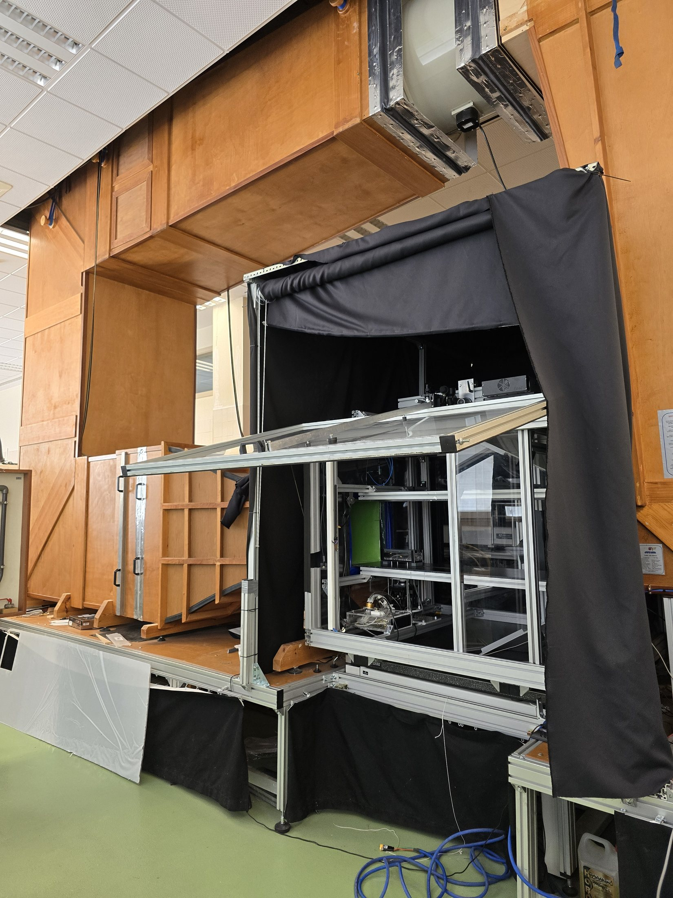
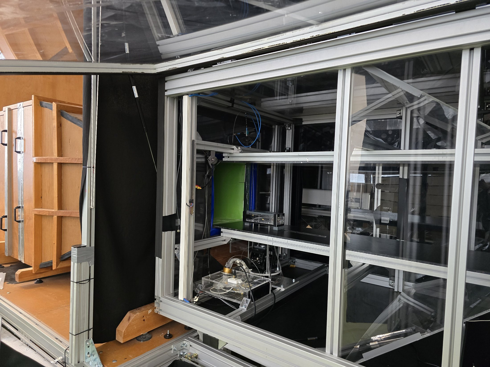
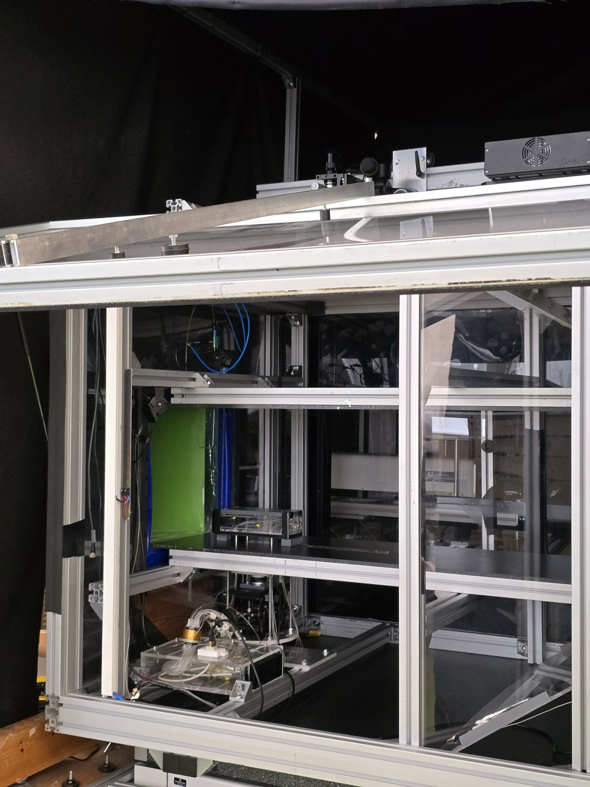
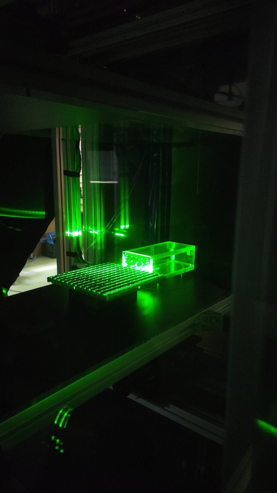
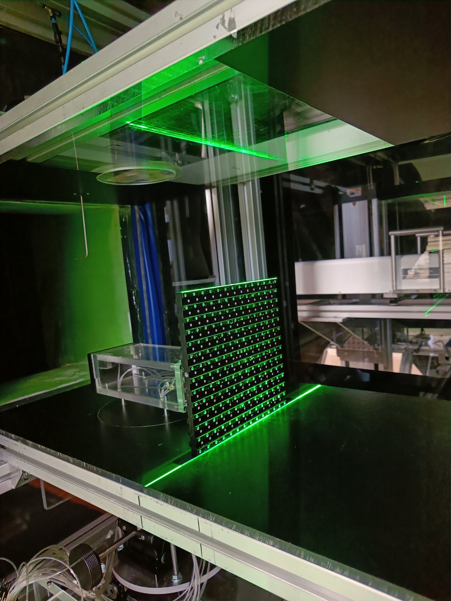
Click the left or right side of a photo, swipe, scroll horizontally, or use the arrow keys to move through the Universidad de Jaén wind-tunnel reel. If idle, the reel advances automatically.
Other Experimental Material
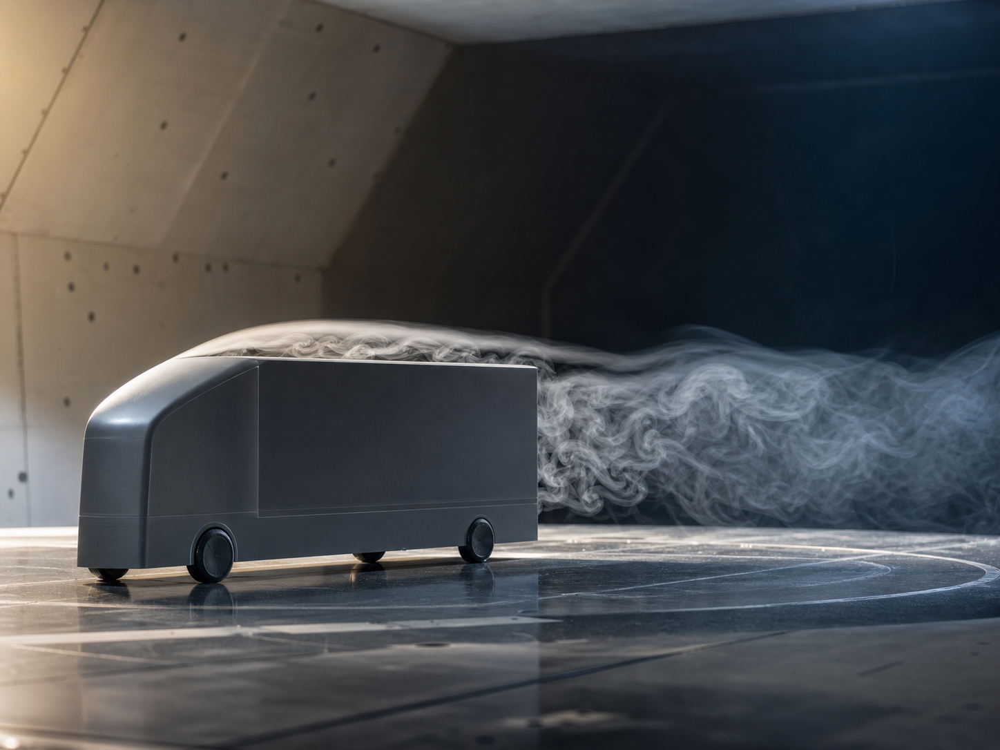
Wind Tunnel
Bluff-body wake experiments
Controlled tests on simplified heavy-vehicle and bluff-body geometries, focused on separation, wake topology, and aerodynamic drag.
PIV
Measurement Setup
Particle image velocimetry
Flow-field measurements designed to connect wake organisation with drag, pressure recovery, and unsteady aerodynamic loading.
Devices
Flow Control
Passive and active drag-reduction devices
Visual documentation of adaptive flaps, base-flow control concepts, and experimental configurations used to reduce pressure drag.
Track
Road Testing
Additional on-track material
Further images can be added as the experimental archive grows.
Conferences and Presentations
Talk
Conference Presentation
Research talks
Presentations of experimental results on bluff-body wakes, flow-control strategies, and heavy-vehicle aerodynamic performance.
Poster
Scientific Exchange
Posters and discussions
Visual material from conferences, workshops, and research visits where experimental methods and results are discussed with the community.